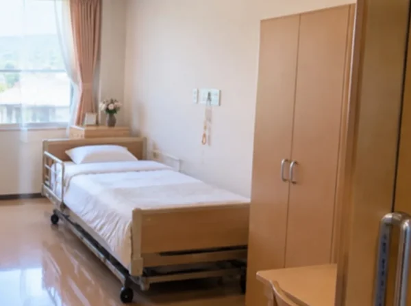

CLEAN CARE JOURNAL / 暮らしから考える清掃
「いまから掃除します」が、伝わったとは限らない。

音より先に、予定を届ける
同じ案内でも、口頭で分かりやすい人、文字や絵が分かりやすい人がいます。返事がないことだけで、了承したと決めることはできません。福祉施設の清掃では、作業の方法だけでなく、どう知らせるかも相談事項です。
厚生労働省の発達障害に関する教材では、具体的な伝え方、見通しを持てる手順、感覚面の調整などを挙げています。職場向け教材なので施設清掃の手順書ではありませんが、一律の声かけだけで済ませない視点として参考になります。教材
変わることを、小さく分けて知らせる
ここからは清掃への応用案です。「床を掃除します」だけでなく、どの場所を、いつから、どのくらい使えなくするかを伝える。必要なら、職員が普段用いている写真や絵の案内に合わせます。新しい説明道具を持ち込むより、その人が分かる方法を知る職員に尋ねるところから始めます。
予定を伝える際には、確約できない時間を断言しないことも大切です。乾燥などに時間がかかる場合は、終了時刻の目安と、使える状態を誰が確認するかを分けます。待つ場所や通れる経路も、施設側と先に相談します。
小さな反応を、作業の邪魔とみなさない
顔を背ける、耳を押さえる、その場所から離れる。それだけで原因や病名は判断できません。ただ、作業を進める前に職員へ伝える手がかりにはなります。本人の言葉や行動をどう理解するかは、日頃の関わりと合わせて考える必要があります。
障害福祉の意思決定支援ガイドライン第2版は、本人に合う意思疎通と、反応を継続して捉えることを重視しています。清掃側は医療やケアを代行せず、実際に見たことを職員へ伝え、変更できる工程を相談します。
今日の持ち帰り
「説明したか」ではなく「本人が分かる方法で知らせたか」を確認する。そのために、作業前の打合せで連絡担当を一人決め、困ったときに止めて相談できるようにします。強い不安や体調の変化が見られた場合は、その場の作業を中断して施設職員へ知らせます。
香りや音への感じ方を全員同じと考えず、本人ごとに確認する。職員の経験を清掃の段取りへ取り入れることで、生活の場所に外部の作業が入る負担を、小さくできる可能性があります。